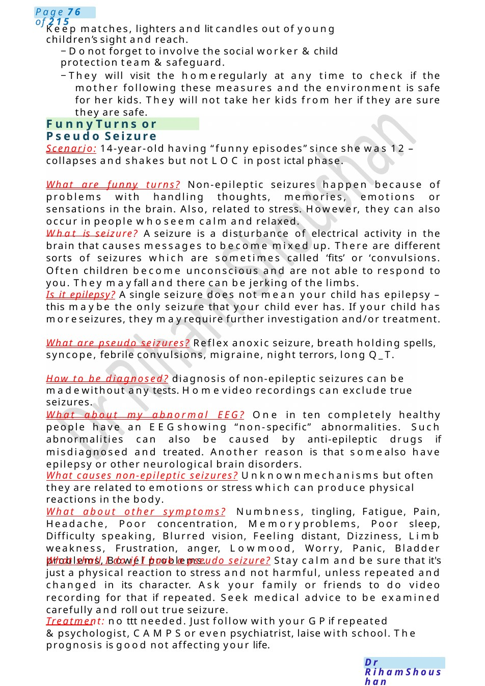

Funny Turns or Pseudo Seizure
Keep matches, lighters and lit candles out of young children’s sight and reach. −Donot forget to involve the social worker &child protection team &safeguard.
Scenario Summary
Keep matches, lighters and lit candles out of young children’s sight and reach. −Donot forget to involve the social worker &child protection team &safeguard.
Full Original Scenario

Funny Turns or Pseudo Seizure
Keep matches, lighters and lit candles out of young children’s sight and reach.
−Donot forget to involve the social worker &child protection team &safeguard.
−They will visit the homeregularly at any time to check if the mother following these measures and the environment is safe for her kids. They will not take her kids from her if they are sure they are safe.
Scenario: 14-year-old having “funny episodes” since she was 12 – collapses and shakes but not LOC in post ictal phase.
What are funny turns? Non-epileptic seizures happen because of problems with handling thoughts, memories, emotions or sensations in the brain. Also, related to stress. However, they can also occur in people whoseem calm and relaxed.
What is seizure? Aseizure is a disturbance of electrical activity in the brain that causes messages to become mixed up. There are different sorts of seizures which are sometimes called ‘fits’ or ‘convulsions. Often children become unconscious and are not able to respond to you. They mayfall and there can be jerking of the limbs.
Is it epilepsy? Asingle seizure does not mean your child has epilepsy – this maybe the only seizure that your child ever has. If your child has moreseizures, they mayrequire further investigation and/or treatment.
What are pseudo seizures? Reflex anoxic seizure, breath holding spells, syncope, febrile convulsions, migraine, night terrors, long Q_T.
How to be diagnosed? diagnosis of non-epileptic seizures can be madewithout any tests. Homevideo recordings can exclude true seizures.
What about my abnormal EEG? One in ten completely healthy people have an EEGshowing “non-specific” abnormalities. Such abnormalities can also be caused by anti-epileptic drugs if misdiagnosed and treated. Another reason is that somealso have epilepsy or other neurological brain disorders.
What causes non-epileptic seizures? Unknownmechanisms but often they are related to emotions or stress which can produce physical reactions in the body.
What about other symptoms? Numbness, tingling, Fatigue, Pain, Headache, Poor concentration, Memoryproblems, Poor sleep, Difficulty speaking, Blurred vision, Feeling distant, Dizziness, Limb weakness, Frustration, anger, Lowmood, Worry, Panic, Bladder problems, Bowel problems.
What shall I do if I have a pseudo seizure? Stay calm and be sure that it's just a physical reaction to stress and not harmful, unless repeated and changed in its character. Ask your family or friends to do video recording for that if repeated. Seek medical advice to be examined carefully and roll out true seizure.
Treatment: no ttt needed. Just follow with your GPif repeated &psychologist, CAMPSor even psychiatrist, laise with school. The prognosis is good not affecting your life.

Febrile Convulsions
Am I allowed to drive? Yes, but if your seizures involve a sudden loss of consciousness without any warning, your neurologist may feel that it would not be safe for you to drive &the decision as to whether you should be driving rests with the Drivers and Vehicle Licensing Authority (DVLA).
Advice & red flags: if repeated, has LOC,prolonged to seek medical advice.
Scenario: recurrent 4th time and there is family history of TSin the family with infantile spasm on medications, the mother is worried about to be the same condition.
Explain & draw brain &impulses to explain the seizure.
What are febrile convulsions? Febrile convulsions are a type of fit (seizure) that is triggered by a high temperature in a child. They normally happen between the ages of six months and five years.
What causes febrile convulsions? occur whenchildren have a temperature usually above 38 degrees. They can be more common if someone else in the family has had them before. Children who have common viral illnesses such as ear, throat and chest infections and bacterial infections such as a urinary tract infection maydevelop these high temperatures.
It will happen again? Yes, I am sorry to tell you that it can be repeated.
What do you do if a child is having a febrile convulsion? Try to stay calm and make a note of the time when the convulsion starts. Ensure the child is safe from harm and moves any hard or sharp objects from nearby. After the seizure ends, the safest position in which to put the child is the recovery position with their head tilted slightly backwards. Loosen any clothing, especially around the neck. Don't hold them down. Don't put anything in their mouth. don't put ice, use normal temperature. If the convulsion lasts longer than five minutes or the child does not recover quickly or affects one side of the body, then you should call 999. If this is the child’s first convulsion they should be reviewed by a doctor.
Can febrile convulsions be prevented? Unfortunately, febrile convulsions cannot be prevented, they usually happen at the start of illness whenthe temperature is rising rapidly. Youcan give paracetamol or Brufen. These will make your child feel more comfortable and reduce their temperature, but they do not prevent convulsion from happening.
Any investigations needed? Wewill only do sometests to knowthe cause of fever, for seizures in the first time as the patient is well with no alarming signs, so no need to do any investigations.
It can affect other kids: having one child can increase the risk.
Can a child have more than one febrile convulsion? Yes, children have a chance of having another febrile convulsion during episodes of illness. The risk is higher if the child at the time of the first febrile seizure was younger than 18 months or the child’s seizure occurred with low grade fever. if There have been multiple seizures in the same febrile illness. Or there is a family history of febrile seizures.